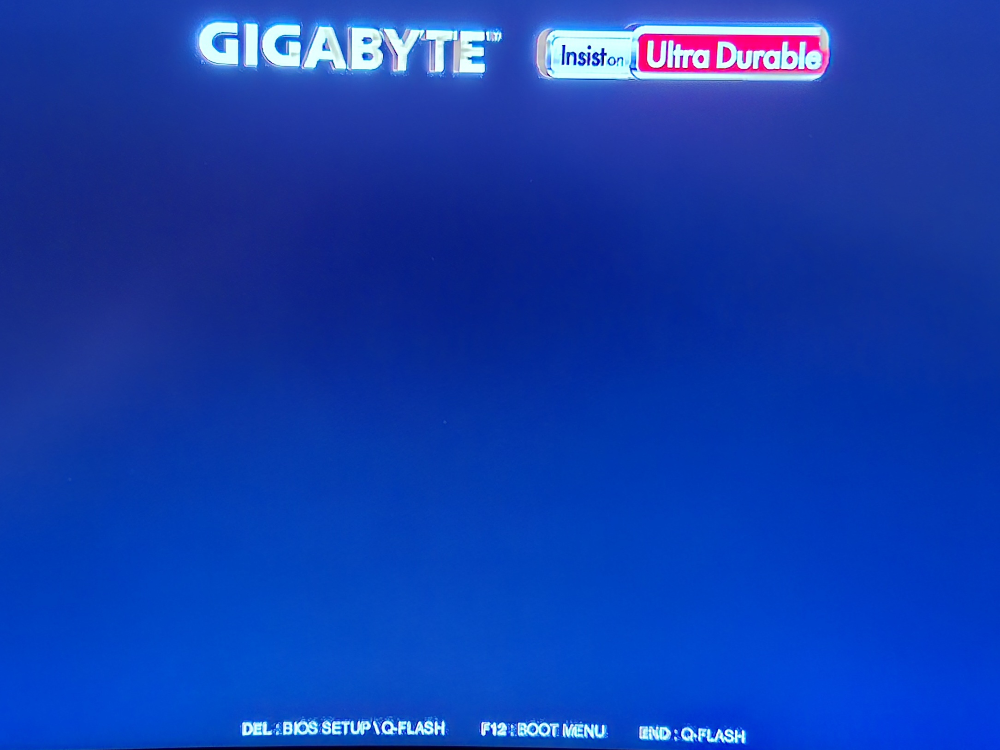
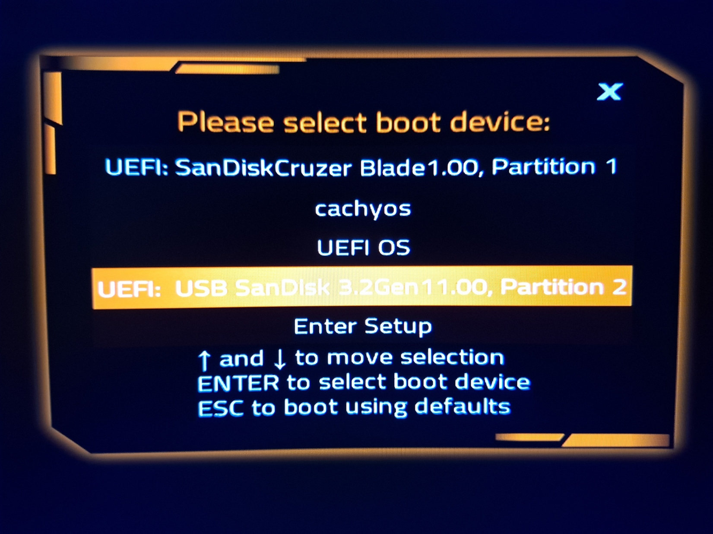
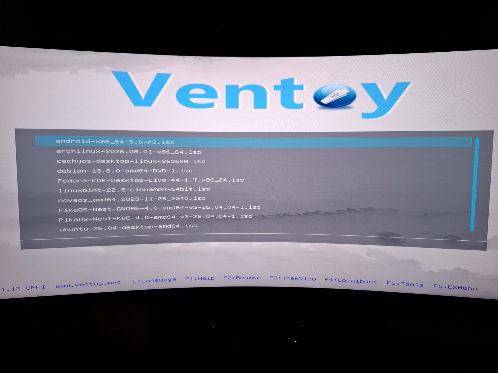

How To Install Arch Linux
PREPERATION
First, you will need to download Ventoy
on your system.
I will list instructions on getting ventoy running on each os.
On Windows, click here to go to the ventoy download page, Then download the windows version of ventoy, Then extract the file, Then run ventoy.
On Pacman/Arch based systems, open terminal and type sudo pacman -S paru if you don't already have paru, Then type sudo paru -S ventoy, Then run ventoy.
On Red Hat/Fedora systems, open terminal and type sudo dnf copr enable karlisk/ventoy Then type sudo dnf install ventoy, Then run ventoy.
On Nixos, (Note this will only work if you allowed unfree software when you installed Nixos), open terminal and type nix-shell -p ventoy-full Then type sudo ventoy-web Then it will give you a link, copy the link, then open your browser and paste it into the search bar, Then it will be running ventoy in your browser.
On Ubuntu based systems, click here to go to the sourceforge ventoy download page, then download the linux.tar.gz file then in terminal type cd Downloads Then type tar -xzvf ventoy-(version number here)-linux.tar.gz must match the version you downloaded for example ventoy-1.1.17-linux.tar.gz Then type cd ventoy-(version number) Then type ls Then type sudo ./VentoyWeb.sh Then copy the it will give you a link to copy, after copying the link open your browser and paste it into the search bar, Then you will have ventoy running in the browser.
Next, install ventoy to an empty usb drive, by opening ventoy, selecting which usb drive you want to use, and then clicking install.
Once thats done, install an Arch linux iso, you can click here to go to the Arch linux downloads page, Then scroll down to where it says Worldwide on the site, Then click on one of the options listed under Worldwide, Then after it takes you to the list of files click the file that says archlinux-x86_64.iso to download the Arch linux iso file.
Now put the Arch linux iso file you just downloaded onto the ventoy usb drive.
Lastly, if you are ready to install Arch linux, restart your pc and enter the boot options with the button instructed to be pressed on the bios startup screen common ones are F2, F12, and DELETE.
This is my startup screen for example, so i would hit F12 for boot options.

Then, select the VENTOY PARTITION 2 in the boot options.
Here is mine as an example, yours will be the name of the usb drive you installed ventoy on and partition 2.

Then, select the Arch linux iso on the ventoy boot loader screen.
This is what that should look like.

Once you open the Arch linux iso and you're on the bootloader menu, select Arch Linux install medium (x86-64, BIOS), and that will boot you into the installer, which will look like terminal, and with that done, we move on to.
INSTALLATION
Now first off i will mark all command clearly with two dashes on the start and end of a command and a hash at the start of a command, heres an example --#sudo pacman -Syu--
Now with that out of the way the first thing you will want to do is set your keyboard layout, so first type --#localectl list-keymaps-- Then use the arrow keys to scroll down and locate the keyboard layout you want to use, after you locate it press ctrl+c to exit, then set your keyboard layout with --#loadkeys us-- (or whichever option you chose) and that will set your keyboard layout.
Now you can set the font to be very readable with --#setfont ter-132b--
Next you'll want to verify the boot mode with --#cat /sys/firmware/efi/fw_platform_size-- if the command returns 64
then you're booted in UEFI mode with a 64 bit UEFI, if it returns 32
then same thing but it's a 32 bit UEFI which may limit the bootloader choice to those that support mixed mode booting, if it returns No such file or directory
then you're in BIOS or CSM mode, just remember which mode you're in for later.
Now type --#ip link-- to connect to the internet, if you're on ethernet thats it (I highly recommend just using ethernet), but for wifi you need to also use another command and do some more stuff after that, i recommend just following this guide here for setting up wifi, you may also need to configure the DHCP dynamic IP address and DNS server assignment, if your wifi connection isn't WLAN or WWAN, if you need to assign the ip address follow this guide here for that.
Now test your connection with --#ping 1.1.1.1-- and if it works, once it's done 4 or more pings press ctrl+c to stop the pinging.
Now use --#timedatectl-- to update the system clock.
Ok now it's time to find, format and partition the disk, first type --#fdisk -l-- to list your drives, results ending in rom, loop or airootfs may be ignored. mmcblk* devices ending in rpmb, boot0 and boot1 can be ignored.
Now once you have located the drive you want to use you'll need to format it, i will use /dev/sda as the example, but yours might be different and if it is, replace /dev/sda with your drives name, now type --#fdisk /dev/sda--
Then type --#n--
Then just hit enter for the default (primary partition)
And then hit enter again for default (partition 1).
Now for the sectors, you will want to make this partition 1Gb, to do that hit enter once to set the default first number (2048)
Then --#2097024-- to size it as 1Gb
Then type --#a-- to make it have the bootable flag.
Now to make the second partition, type --#n--
Then just hit enter for each default it will be (primary) (partition 2) (2048) (the rest of the size on the disk)
Then after that type --#w-- to write that to the disk.
Now you should have two formatted but unpartitioned disk sections, mine are /dev/sda1 and /dev/sda2 so yours should be your disks name then 1 and 2
Now it's time to make the partitions, for the first partition, the boot partition, type --#mkfs.fat -F32 /dev/sda1-- to make the boot partition.
Then --#mkfs.ext4 /dev/sda2-- to make the second partition, the root partition.
Now mount the drive and make the directory by typing --#mount --mkdir /dev/sda2 /mnt--
Then --#mount --mkdir /dev/sda1 /mnt/boot--
Now that you've made the directories, it's time to install the essentials.
To install the essentials for the os, type --#pacstrap -K /mnt base linux linux-firmware networkmanager--
Now type --#arch-chroot -S /mnt-- to get into the new install so you can configure some things.
Then type --#locale-gen-- to generate the locales for region and language specific formatting.
Then --#ln -sf /usr/share/zoneinfo/Region/City /etc/localtime-- to set your time zone.
Then type --#hwclock --systohc-- to generate a file for time configuration.
Then --#echo "LANG=en_AU.UTF-8" > /etc/locale.conf-- to set the language (swap en_AU for your language.)
Then --#passwd-- and create your root password then confirm it.
(do not forget this.)
Then create a hostname with --#echo "myhostname" > /etc/hostname--
Now you have to install grub and install it to the drive.
So type --#pacman -S sudo grub os-prober-- to download grub.
Now if your on a UEFI system, type --#grub-install --target=x86_64-efi --efi-directory=/dev/sda --bootloader-id=GRUB--
Or if you're on a BIOS system, type --#grub-install --target=i386-pc /dev/sda--
Then type --#grub-mkconfig -o /boot/grub/grub.cfg--
Then you will need to make a user with --#useradd -m -G audio,video,input,wheel,sys,log,rfkill,lp,adm -s /bin/bash yourusername--
Then set the password for the user you just made with --#passwd yourusername--
(Do not forget this.)
Finally press ctrl+d then type reboot.
If it pulls up the installers bootloader again just press the boot existing os option.
SETUP
So now you boot into Arch linux, you will get a login prompt, you will want to sign in as root first to setup some stuff first, type in root as the username, then the root password you made.
So first off, you need to setup your internet, type --#systemctl eneable NetworkManager.service-- then --#systemctl start NetworkManager.service--
Then type --#pacman -S reflector nano xorg-server xorg-xinit-- to download package reflectors, and nano, a useful editor tool, also xorg which is an important tool for GUI's (Graphical User Interfaces) in linux.
Then do a system-wide update with --#pacman -Syu--
Now you will want to install a desktop environment, and a login manager.
Below i will leave 6 buttons you can press to display each desktop environment.

Below there will be 4 buttons you can press to see what the different login managers look like.

To install a dektop environment and a login manager, you will need to do --#sudo pacman -S desktop-environment-package-name login-manager-package-name-- and then enable the login manager GUI on startup.
Below i will list the desktop environment packages, login manager packages, and the command to enable each login manager GUI.
Dektop environment packages.
- KDE Plasma packages.
plasma-meta kde-applications-meta - Gnome packages.
gnome gnome-extra - Cinnamon packages.
cinnamon gnome-terminal - XFCE packages.
xfce4 xfce4-goodies - Cosmic packages.
cosmic - MATE packages.
mate
Login manager packages.
- Plasma login manager.
plasma-login-manager - SDDM.
sddm - GDM.
gdm - Cosmic greeter.
cosmic-greeter
Enabling the login manager GUI.
- For Plasma login manager, type in terminal.
--#systemctl enable plasmalogin-- - For SDDM, type in terminal.
--#systemctl enable sddm-- - For GDM, type in terminal.
--#systemctl enable gdm-- - For Cosmic greeter, type in terminal.
--#systemctl enable cosmic-greeter--
Then you just have to restart your system by typing in --#reboot--
After you start up your os, go to terminal/konsole and type --#su root--, and type in the root password you made in the installer to swap to root user.
Now as root user type --#sudo EDITOR=/usr/bin/nano visudo-- now use the arrow keys to navigate to where it says, "##uncomment to allow members of group wheel to execute any command"
"# %wheel ALL=ALL(ALL:ALL) ALL" remove the hash from this line so it's just %wheel ALL=ALL(ALL:ALL) ALL
Then press ctrl+x then press y then hit enter.
Now you can go to terminal and type --#su yourusername-- to swap back to your user, and now you should be able to run commands as root, like --#sudo pacman -Syu-- the system-wide update command.
Now you can configure your settings, go to your panel/taskbar and lookup system settings, then you can configure any other stuff you need to like keyboard layout (again or fix it), themes, wallpaper, display settings, general stuff like that.
You can also check out my Linux setup guide with the button at the bottom of the page for some more detailed setup stuff.
AND DONE
And thats pretty much it.
Congratulations you've managed to install Arch linux.
=)ENJOY USING LINUX!